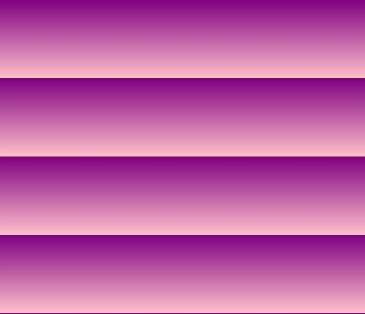

Para fazer um degradê primeiro, dentro da tag <style>, colocamos a propriedade
background-image: linear-gradient(direção, primeira cor, segunda cor);
Vale ressaltar que pode usar quantas cores quiser pra fazer esse degradê, o importante é não exagerar
Quando for fazer degradês de baixo pra cima ou de cima pra baixo se você não usar a configuração
background-attachment: fixed;
a tela pode ficar com várias listras igual na imagem abaixo
